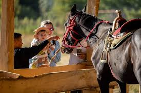

Свобода. Природа. Гармония с лошадьми.
Мы организуем уникальные прогулки верхом в живописной местности, где вы сможете ощутить настоящую связь с природой. Наши лошади добрые и обученные, а маршруты — безопасны и интересны. Идеально для пар, семей, фотосессий или просто уединения от городской суеты.